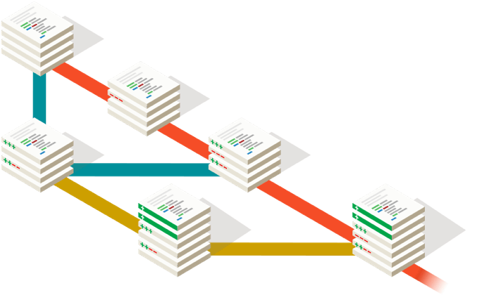
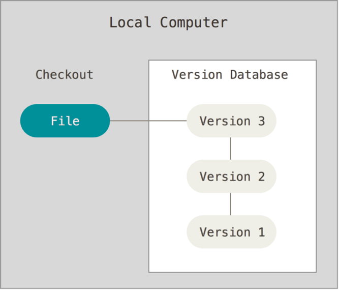
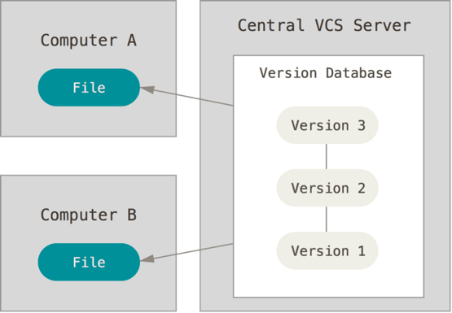
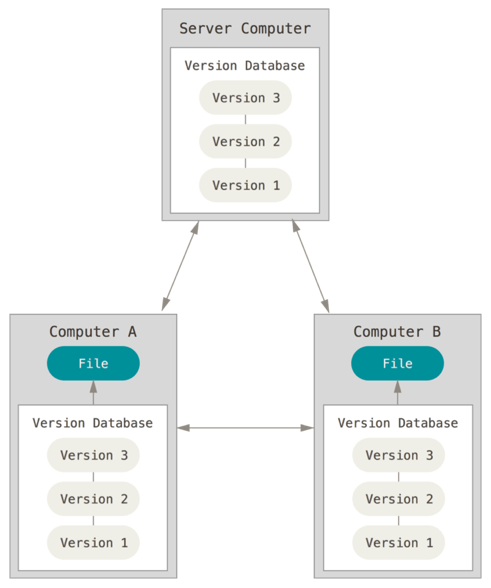
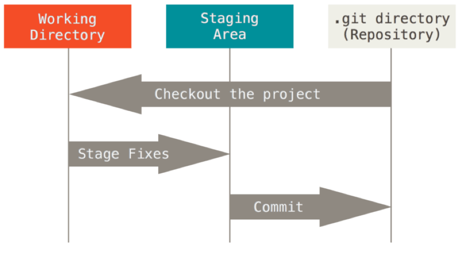

¿Que es git?
Figure 1. Ramas de Código Fuente ( (Pagina web de GIT, s.f.))
Git es un sistema de control de versiones distribuido gratuito y de código abierto diseñado para manejar todo, desde proyectos pequeños hasta muy grandes, con velocidad y eficiencia. (Pagina web de GIT, s.f.).
¿Qué es el "control de versiones" y por qué debería importarle? El control de versiones es un sistema que registra cambios en un archivo o conjunto de archivos a lo largo del tiempo para que pueda recuperar versiones específicas más adelante. (Straub, 2014).
Control de versiones usado anteriormente es ir guardando cada vez un archivo en alguna carpeta, pero esto es propenso a errores, por esto se desarrolló un sistema de control de versiones SVC locales que tenían una base de datos simple que mantenía todos los cambios en los archivos bajo control de revisión.
Figure 2. Control de versión local. Fuente: Libro ProGit (Straub, 2014)
Cuando se está trabajando en un proyecto en muchas ocasiones se requiere que varios desarrolladores colaboren con el proyecto, esto inicialmente se solucionó con el SCV central, esto sistema tiene muchas ventajas, pero un gran inconveniente es el hecho de un servidor centralizado. Si ese servidor deja de funcionar durante una hora, durante esa hora nadie puede colaborar ni guardar cambios versionados en nada en lo que esté trabajando. Si el disco duro en el que se encuentra la base de datos central se corrompe y no se han guardado las copias de seguridad adecuadas, perderá absolutamente todo: el historial completo del proyecto, excepto las instantáneas individuales que la gente tenga en sus máquinas locales.
Figure 3. Control de Versiones Centralizado. Fuente: Libro ProGit (Straub, 2014)
Eso lo solucionan los sistemas de control de versiones distribuidos (DVCS). En un DVCS, los clientes no solo revisan la última instantánea de los archivos; más bien, reflejan completamente el repositorio, incluido su historial completo. Por lo tanto, si algún servidor muere y estos sistemas colaboran a través de ese servidor, cualquiera de los repositorios de clientes se puede copiar en el servidor para restaurarlo. Cada clon es realmente una copia de seguridad completa de todos los datos. (Straub, 2014)
Figure 4. Control de Versiones Distribuidos. Fuente: Libro ProGit (Straub, 2014)
Entonces ahora con los argumentos anteriores, podemos decir con propiedad que GIT es un es una herramienta que realiza una función del control de versiones de código de forma distribuida, muy potente, muy rápida, multiplataforma. En el que destacamos varias características:
- Instantánea: Git piensa en sus datos más como una serie de instantáneas de un sistema de archivos en miniatura. Con Git, cada vez que confirma o guarda el estado de su proyecto, Git básicamente toma una imagen de cómo se ven todos sus archivos en ese momento y almacena una referencia a esa instantánea. Para ser eficiente, si los archivos no han cambiado, Git no almacena el archivo nuevamente, solo un enlace al archivo idéntico anterior que ya ha almacenado. Git piensa en sus datos más como un flujo de instantáneas .
- Operaciones locales: La mayoría de las operaciones en Git solo necesitan archivos y recursos locales para funcionar; generalmente, no se necesita información de otra computadora en su red. Si está acostumbrado a un CVCS donde la mayoría de las operaciones tienen esa sobrecarga de latencia de red, este aspecto de Git le hará pensar que los dioses de la velocidad han bendecido a Git con poderes sobrenaturales. Debido a que tiene el historial completo del proyecto allí mismo en su disco local, la mayoría de las operaciones parecen casi instantáneas. Esto también significa que es muy poco lo que no puede hacer si está desconectado o desconectado de la VPN.
- Integridad: Todo en Git se suma de verificación antes de que se almacene y luego se hace referencia a él mediante esa suma de verificación. Esto significa que es imposible cambiar el contenido de cualquier archivo o directorio sin que Git lo sepa. Esta funcionalidad está integrada en Git en los niveles más bajos y es parte integral de su filosofía. No puede perder información en tránsito o dañar el archivo sin que Git pueda detectarlo.
- No depende de un repositorio central
- Es software libre.
Figure 5. Características de Gif. (Fuente: Autoría Propia)
Git tiene tres estados principales en los que pueden residir sus archivos: modificado , preparado y comprometido :
Modificado significa que ha cambiado el archivo pero aún no lo ha enviado a su base de datos.
En etapas significa que ha marcado un archivo modificado en su versión actual para ir a su próxima instantánea de confirmación.
Comprometido significa que los datos se almacenan de forma segura en su base de datos local.
Esto nos lleva a las tres secciones principales de un proyecto de Git: el árbol de trabajo, el área de preparación y el directorio de Git.
Figure 6.Árbol de trabajo, área de ensayo y directorio de Git. Fuente: Libro ProGit (Straub, 2014)
El árbol de trabajo es un proceso de pago único de una versión del proyecto. Estos archivos se extraen de la base de datos comprimida en el directorio Git y se colocan en el disco para que los use o modifique.
El área de preparación es un archivo, generalmente contenido en su directorio Git, que almacena información sobre lo que se incluirá en su próxima confirmación. Su nombre técnico en el lenguaje de Git es "índice", pero la frase "área de preparación" funciona igual de bien.
El directorio de Git es donde Git almacena los metadatos y la base de datos de objetos para su proyecto. Esta es la parte más importante de Git, y es lo que se copia cuando clona un repositorio desde otra computadora.
El flujo de trabajo básico de Git es algo como esto:
- Modifica archivos en su árbol de trabajo.
- Organiza selectivamente solo aquellos cambios que desea que formen parte de su próxima confirmación, que agrega solo esos cambios al área de preparación.
- Realiza una confirmación, que toma los archivos tal como están en el área de preparación y almacena esa instantánea de forma permanente en su directorio Git.
¿Que es github?
Es un sitio web y un servicio en la nube que ayuda a los desarrolladores a almacenar y administrar su código, al igual que llevar un registro y control de cualquier cambio sobre este código. (KINSTA, 2020)
GitHub facilita la colaboración con git. Es una plataforma que puede mantener repositorios de código en almacenamiento basado en la nube para que varios desarrolladores puedan trabajar en un solo proyecto y ver las ediciones de cada uno en tiempo real.
Además, también incluye funciones de organización y gestión de proyectos. Puede asignar tareas a individuos o grupos, establecer permisos y roles para los colaboradores y usar la moderación de comentarios para mantener a todos en la tarea.
Además, los repositorios de GitHub están disponibles públicamente. Los desarrolladores de todo el mundo pueden interactuar y contribuir al código de los demás para modificarlo o mejorarlo, lo que se conoce como «codificación social». En cierto modo, esto hace que GitHub sea un sitio de redes para profesionales de la web.
Hay tres acciones principales que puede realizar cuando se trata de interactuar con el código de otros desarrolladores en GitHub:
- Bifurcación: El proceso de copiar el código de otra persona del repositorio para modificarlo.
- Pull: Cuando haya terminado de hacer cambios en el código de otra persona, puede compartirlos con el propietario original a través de una «solicitud pull».
- Fusión: Los propietarios pueden añadir nuevos cambios a sus proyectos a través de una fusión, y dar crédito a los contribuyentes que los han sugerido.
Referencias
- GitHub, Inc. (2021). GitHub docs. Obtenido de Clonar un repositorio desde GitHub: https://docs.github.com/es/github/creating-cloning-and-archiving-repositories/cloning-a-repository-from-github
- GitHub,Inc. (2021). GitHub Docs, Enterprise Server 3.0. Obtenido de Acerca de los repositorios: https://docs.github.com/es/github/creating-cloning-and-archiving-repositories/creating-a-repository-on-github
- KINSTA. (8https://kinsta.com/es/base-de-conocimiento/que-es-github/ de Agosto de 2020). ¿Qué es GitHub? Una Guía para Principiantes sobre GitHub.
- KINSTA. (29 de Diciembre de 2020). Git vs Github: ¿Cuál es la Diferencia y cómo Empezar? Obtenido de https://kinsta.com/es/base-de-conocimiento/git-vs-github/#una-introduccin-a-git-y-al-control-de-versiones
- Pagina web de GIT. (s.f.). GIT- control-de-versión-rápido. Obtenido de https://git-scm.com/
- RENE, L. (14 de Enero de 2017). LUIS MAS DEV. Obtenido de Instalación y Uso de GitHub Desktop: https://luismasdev.com/instalacion-y-uso-de-github-desktop/ Straub, S. C.-B. (2014). Pro Git (2da Edición ed.). Apress. Obtenido de https://git-scm.com/book/en/v2/Getting-Started-About-Version-Control